The multiplier shows the relationship between an initial change in spending and the final rise in GDP.
The multiplier is also known as the national income multiplier. The multiplier effect occurs because a rise in expenditure will create incomes, some of which will be spent and thereby create more incomes.
For example, if people spend 80% of any extra income, an increase of government spending of $20 billion wil cause a final rise in GDP of $100 billion. This is because the initial $20 billion spent will create higher incomes. People will spend %16 billion of these extra incomes, since in this scenario individuals spend %80 of their extra income. This will generate a further rise of incomes. Of the $16 billion, $12.8 billion will be spent. This process will continue until incomes increase to $100 billion and the change in interjection is matched by the cahnge in withdrawls.
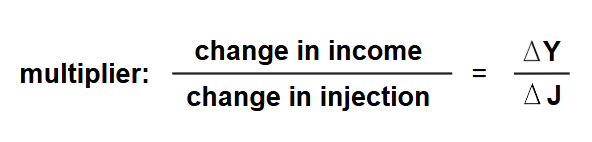
In the example above, the multiplier is $100bn / $20bn = 5
As a reminder: In an economy's circular flow of income model, injections are additions of money that increase economic activity. Withdrawals (or leakages) are factors that remove money from the flow, reducing economic activity.
In a closed economy, there are two sectors: households and firms. There is only one withdrawl (saving S) and one injection (investment I).
In this economy, the multiplier can by found using the formula:
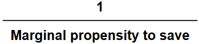
or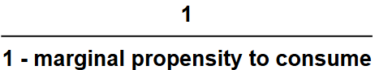
Marginal propensity to save (mps) is the proportion of extra income which is saved.
Marginal propensity to consumer (mpc) is the proportion of extra income that is spent:
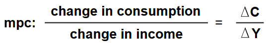
This is the model because income is either saved or spent. For example is a person receives an extra $100 of income and spends $70, mpc will be 0.7, and mps will be 1 - 0.7 = 0.3
Equilibrium income will occur where aggregate expenditure equals output, which in this case is where C + I = Y and injections equal withdrawls, I = S.
In this economy, there are three sectors: households, firms, and the government. There are two withdrawls (saving S and taxation T) and two interjections (investment and government spending G). The multiplier is now:
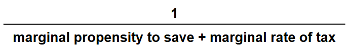
Marginal rate of tax (mrt) is the proportion of extra income with is taxed. This is also sometimes called the marginal propensity to tax.
Equilibrium income is where aggregate expenditure equals output, C + I + G = Y and interjection equals withdrawals, I + G = S + T.
In this economy there are four sectors: households, firms, the government, and the foreign trade sector. There are three withdrawls (saving S, taxation T, and imports M) and three interjections (investment I, government spending G, and exports X). The full multiplier is now:
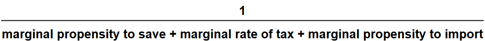
Mariginal propensity to import (mpm) is the proportion of extra income that is spent on imports.
Equilibrium income is where aggregate expenditure equals output, in this case it is C + I + G + (X - M) = Y and interjections equal withdrawals, I + G + X = S + T + M.
When an individual has low income, most if not all disposible income has to be spent to meet current needs. Consumption may exceed income leading people to draw on past savings or borrowing. This situatoin is know as dissaving.
The average propensity to save (aps) is the proportion of disposable income which is saved. This can be calculates using:
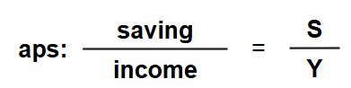
As income rises, the actual amount saved and aps tend to increase. The rich usually have a higher aps than those with low income.
The marginal propensity to save (mps) can also be calculated using this formula:
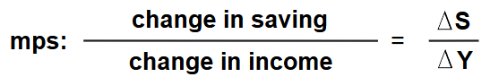
The main influence on consumption is the level of disposable income. When income rises, total spending also usually rises. However, while total spending rises with income, the proportion of disposable income that is spent tends to fall.
Economists refer to this proportion as the average propensity to consumer (apc) which can be calculated with this formula:
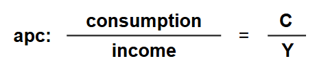
Average rate of tax (art) is the proportion of income taken in tax:
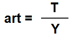
Marginal rate of tax (mrt) is the proportion of extra income that is paid in tax:
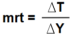
Average propensity to import (apm) is the proportion of income spent on imports.
Marginal propensity to import (mpm) is calculated using the formula:
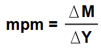
The level of national income is determined where aggregate demand equals aggregate supply. This is also where aggregate expenditure is equal to output.
Aggregate expenditure is the total amount that will be spent at different levels of GDP in a given time period. It is made up of consumption (C), investment (I), government spending (G) and net exports (exports minus imports X-M).
If aggregate expenditure exceeds current output, firms will seek to produce more by employing more factors of production and GDP will rise. Where as if aggregate expenditure is below current output, firms will reduce production. Therefore, output will change until it matches expenditure as shown in the diagram below.
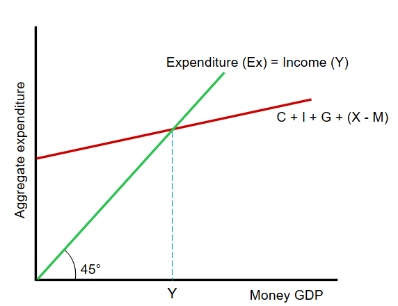
This graph is called the Keynesian 45° diagram.
It measures money GDP on the x-axis and aggregate expenditure on the y-axis.
The level of national income is where the money GDP equals aggregate expenditure on the 45° line.
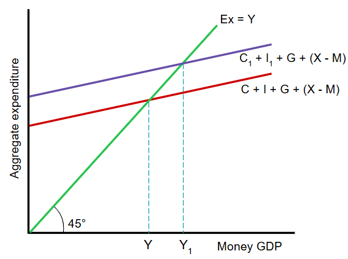
If aggregate expenditure rises, perhaps because of the increase in consumption and invesment due to greater optimisn, output will also increase.
This graph shows GDP increasing from Y to Y1.
Note: an aggregate expenditure curve shows total spending at different income levels.
A change in the total spending on a country's goods and services will result in national income changing by the size of the injection times the multiplier.
For example, if government spending rises by $500m and the multiplier is 2.5, national income will rise by $500m x 2.5 = $1250m.
The rise occurs in stages, with those who receive higher incomes from the increase in government spending purchasing goods and services from others. These other people in turn gain more income, which will lead to further spending and so on. This continues until leakages from the circular flow equal the initial injection.
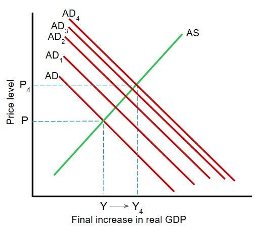
This graph shows how a rise in AD results in a final multiple increase in AD.
Note: a rise in saving will cause GDP to fall. However, the decision by households to save more actually result in them saving less. This is because higher saving can reduce income and hence the ability of households to save.
There are many factors that influence how much households spend.
The main factor is income. Others include: rate of interest, expectations, distribution of income, etc.
The relationship between consumption and income or saving and income can be investigated using the consumption function.
The consumption function indicates how much will be spent at different levels of income. It is given by the equation:
C = a + bY, where C is consumption, a is autonomous consumption, b is the marginal propensity to consume, and Y is disposible income.
Autonomous consumption is the amount spent even when income is zero and which does not vary with income.
For example, if C = $100 + 0.8Y and income is $1000, the amount spent will be $100 + 0.8 x $1000 = $900.
The savings function is, in effect, the reverse of the consumption function. It can be used to work out how much and what proportion households will save at different income levels. It is given by the equation:
S = -a + sY, where S is saving, s is the marginal propensity to save, Y is income and a is autonomous dissaving.
Autonomous dissaving is how much of their savings peopple will draw on when their income is zero; this amount does not change as income changes.
For example, if S = -$200 + 0.2 x $4000 = $600, the average propensity to save will be $600/$4000 = 0.15.
This also means the apc = 1 - 0.15 = 0.85.
Investment is influced by changes in income, consumer demand, rate of interest, technology, cost of capital goods, expectations, and government policies.
Investment that is undertaken independently of changes in income is known as autonomous investment.
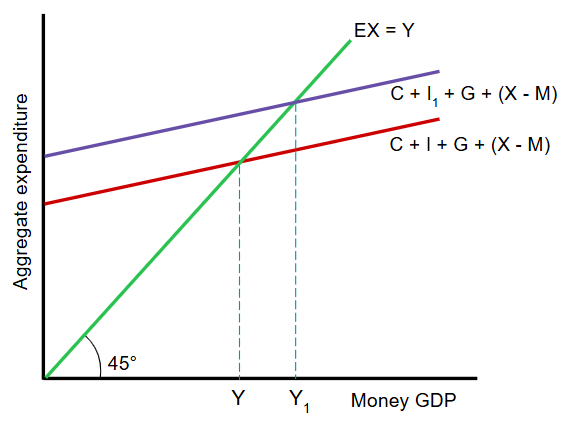
This graph shows an increase in automous investment.
For example, a firm may buy more capital goods because it is more optimistic about the future or because the rate of interest has fallen.
In this case, the aggregate expenditure line will shift upwards.
An increase in investment from I to I1 will lead to the GDP rising by a multiple amount from Y to Y1.
Induced investment is influenced by changes in income. This is illustrated by a movement along the expenditure line.
The accelerator theory focuses on induced investment and emphasises the volatility of investment. It states that investment depends on the rate of changes in income (and therefore consumer demand), and that a change in GDP will cause a greater proportionate change in investment.
For example, if a $1 million increase in GDP causes induced investment to rise by $3 million, the accelerator coefficient is said to be 3.
If investment increases, real GDP is likely to increase by a multiple amount which in turn will incresae investment.
Government spending may increase during an economic downturn in the hope that ir might prevent the economy from experiencing a recression. A government may inject extra spending into the circular flow to ensure that aggregate demand is sufficient to achieve a high level of employment and an increase in the country's output.
The key influences on net exports are the relative price and quality competitiveness of the country's products and incomes at home and abroad.
The relative price competitiveness is influenced by the country's relative productivity, relative inflation rate and its exchange rate.
Quality competitiveness will usually rise if there is an increase in net investment and an improvement in educational standards.
A country will usually sell more exports if other countries experience a rise in their GDP because the other countries' purchasing power has increased. A country is particularly likely to benefit if its firms produce goods with a high income elasticity of demand.
Economies do not often operate at full employment level of national income. At any particular time, they may be producing where total spending is above or below that needed for national income to equal potential output.
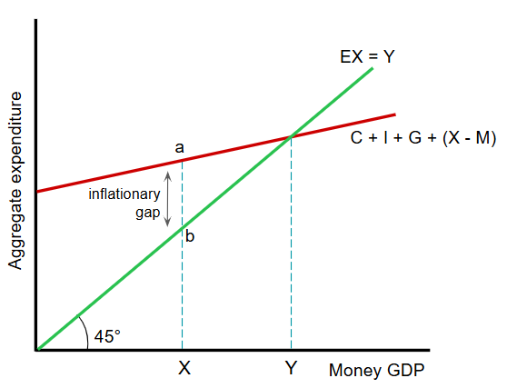
Keynesians argue that in the short run and also in the long run, an economy may not achieve full employment. An inflationary gap will occur if aggregate expenditure exceeds the potential output of the economy.
In this situation, not all demand can be met because there are not enough resources. As a result, the excess demand drives up the price.
This graph shows that an economy is in equilibrium at a GDP of Y, which is above the level of output X.
The distance ab represents the inflationary gap.
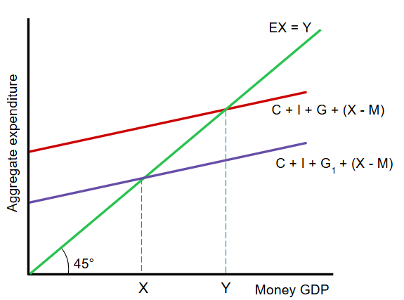
A government can reduce this inflationsary gap but cutting the government spending and/or raising taxation. This will reduce the aggregate expenditure.
This graph shows a reduction in government spending, moving the economy back to full employment level at A.
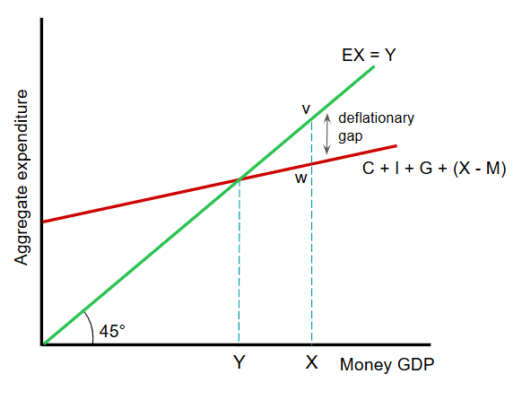
A deflationary gap occurs when the equilibrium level of GDP is below the full employment level.
This graph shows the lack of aggregate expenditure results in equilibrium level of GDP of Y, which is below the full employment level of X.
There is a deflationary gap of vw.
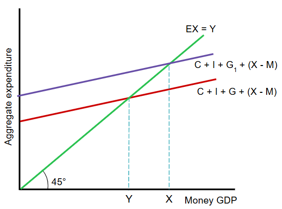
A solution to the deflationary gap is to increase government spending financed by borrowing.
This graph shows an increase in government spending, which eliminated the deflationary gap.
Multiplier: a numerical estimate of a change in spending in relation to the final change in spending.
Marginal propensity to save (mps): the proportion of extra income which is saved.
Marginal propensity to consume (mpc): the proportion of extra income that is spent.
Aggregate Expenditure: the total amount spent in the economy at different levels of income.
Marginal propensity to import (mpm): the proportion of extra income spent on imports.
Consumption: spending by households on goods and services.
Average propensity to consume (apc): the proportion of income that is consumed.
Average propensity to import (apm): the proportion of income that is spent on imports.
Consumption Function: the relationship between income and consumption.
Savings Function: the relationship between income and saving.
Autonomous Investment: investment that is made independent of income.
Induced Investment: investment that is made in response to changes in income.
Accelerator Theory: a model that suggests investment depends on the rate of change in income.
Infaltionary Gap: the excess of aggregate expenditure over potential output (equivalent to a positive output gap).
Deflationary Gap: a shortage of aggregate expenditure so that potential output is not reached (equivalent to a negative output gap).